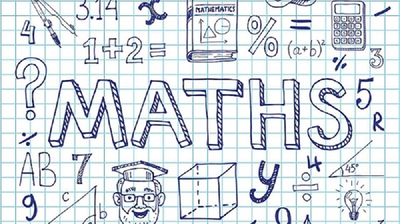

MATHEMATICS

Mathematics is the study of numbers, shapes
and patterns that more often than not is not very easy to understand in a regular classroom;
that couple with the fact that teachers need to deal with very large size classroom with not
enough time to look after your child.
We offer to all students very simple and easy to understand lessons directly in your home virtually.
Our teachers take the time to answer any and all questions ensuring your child understands each concept.
|
SCIENCE
Science is the pursuit and application of knowledge
and understanding of the natural and social world following a systematic methodology based
on evidence, some topic in chemistry, biology and physics need time, practice and generate
more questions in young minds. Our online tutoring approach tackles these subjects with a simple
yet effecive approach; our teachers are there every step of the way until your child understands
and knows how to apply the newly learned topics, we help them approach new concepts logically
and encourage the development of problem-solving skills.
|